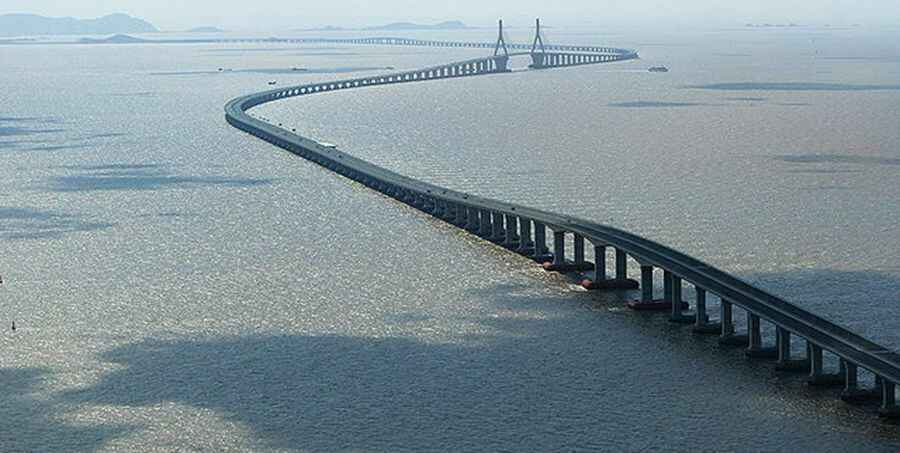
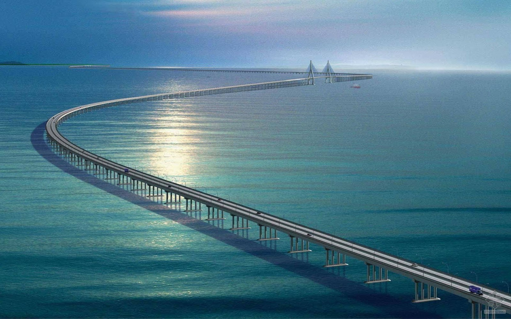

Moje top 5 i wasze propozycje |
Hangzhou Bay Bridge  Most przez zatokę Hangzhou – częściowo podwieszany most zbudowany nad zatoką Hangzhou na wschodnim wybrzeżu Chin. Łączy Jiaxing z miastem Cixi w aglomeracji Ningbo. Budowę mostu rozpoczęto 8 czerwca 2003, a do użytku oddano go 1 maja 2008. Cały most ma długość 36 km. Poprowadzone jest po nim 6 pasów drogi ekspresowej (po 3 pasy w każdym kierunku). Ma dwa główne przęsła o długości 448 i 318 metrów. Koszt budowy wyniósł 11,8 miliarda juanów. 35% tej kwoty uzyskano od prywatnych firm w Ningbo, natomiast 59% stanowią kredyty w chińskich bankach. |